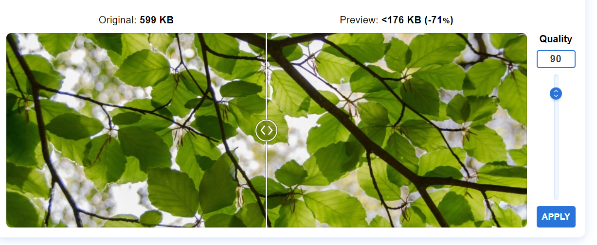
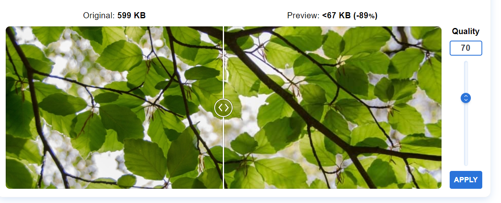
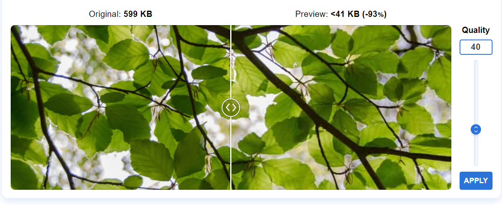
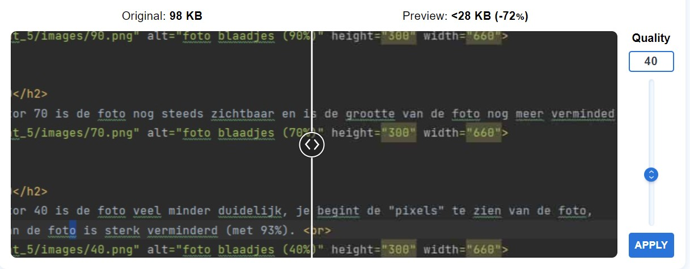
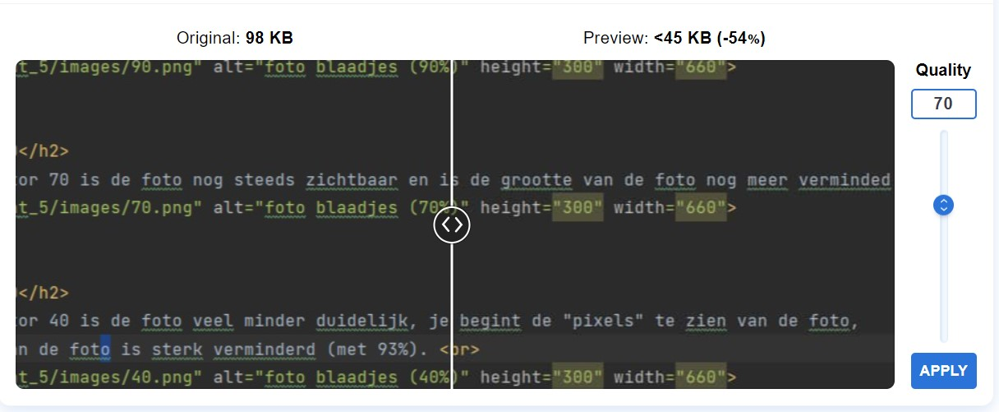

- Met quality factor 90 is de foto nog goed zichtbaar en is de grootte van de foto sterk verminderd (met 71%).

- Met quality factor 70 is de foto nog steeds zichtbaar en is de grootte van de foto nog meer verminderd (met 89%).

- Met quality factor 40 is de foto veel minder duidelijk, je begint de "pixels" te zien van de foto,
ook de grootte van de foto is sterk verminderd (met 93%).

- Op de screen is te zien dat de code van het webstorm document nog altijd leesbaar is, maar toch is er een klein verschil.

- Op de screen is te zien dat de code van het webstorm document moeilijk leesbaar is, ook de grootte van de foto is veel verminderd.
